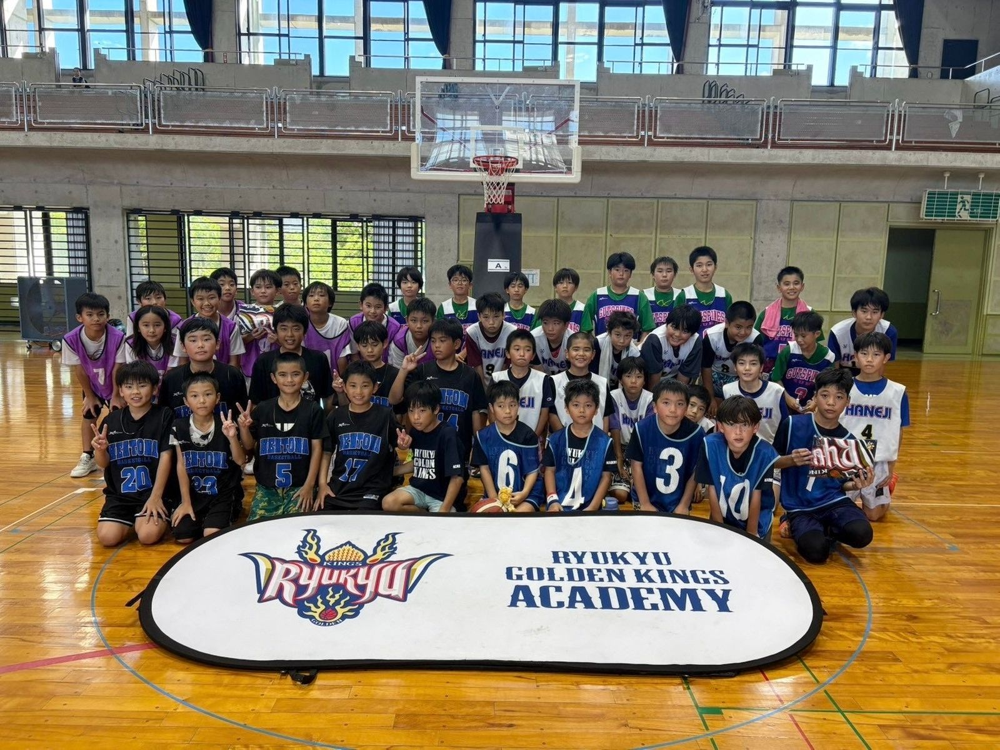

北部地域と交流、約90人が参加 —— 琉球ゴールデンキングス「KINGS ACADEMY CUP 2026」を名護市で開催
沖縄バスケットボール株式会社（沖縄県沖縄市、代表取締役社長・仲間陸人／B.LEAGUE・琉球ゴールデンキングス運営会社）が運営するキングスアカデミーは、8月23日に沖縄県名護市で「KINGS ACADEMY CUP 2026」を開催し、北部地域の部活動チームとキングスバスケットボールスクール生ら約90人の選手が参加したと8月26日発表した。

沖縄本島北部の部活動チームと交流、地域活性化が狙い
今回のカップは名護市で開催され、普段は対戦機会の少ない沖縄本島北部地域の部活動所属選手とキングスバスケットボールスクール生が交流する場として企画された。バスケットボールを通じた北部地域の活性化も目的の一つとしている。
午前は低学年の交流試合、午後はクリニック付きの交流試合
当日は北部地域の部活動チームを招き、午前の部では小学校低学年を対象にした交流試合を実施。普段は試合出場の機会が限られている低学年選手たちが、試合を重ねるごとに自信を持ってプレーする姿を見せたという。午後の部ではキングスバスケットボールスクールのコーチによる1on1のドリブルスキルやフィニッシュスキルを中心としたクリニックを行い、その後の交流試合では学んだスキルを実践しようとする選手の姿が多く見られたとリリースは伝えている。
MVP表彰やくじ引き大会も、参加者からは好評の声
交流試合の終了後にはMVP選手の表彰とくじ引き大会も実施された。参加した選手からは「試合がたくさんできて楽しかった」「試合に多く出られて、シュートも決められたので嬉しかった」といった感想が寄せられ、応援に訪れた保護者からも「応援していて楽しかった。ぜひまた実施してほしい」との声が上がったという。キングスアカデミーは今後もバスケットボールを通じた地域とのつながりを大切にし、地域活性化につながる活動を続けるとしている。
出典: 沖縄バスケットボール株式会社プレスリリース「『KINGS ACADEMY CUP 2026』実施のご報告」（PR TIMES・2026年8月26日）
https://prtimes.jp/main/html/rd/p/000001467.000036112.html